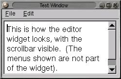

Class Hierarchy
Fl_Group
|
+----Fl_Editor
|
+----Fl_MultiEditor
Include Files
#include <FL/Fl_MultiEditor.H>
Description
This is a subclass of the Fl_Editor
widget that supports editing multiple buffers. You can switch
back and forth among the buffers as desired. There is no preset limit
to the number or size of the buffers.
Methods
Creates a new Fl_MultiEditor widget using the given position, size,
and label string. The default boxtype is FL_DOWN_BOX. The widget will
be created to fit within the given dimensions (it will be sized down slightly
to make room for the scrollbar and status panel).
Destroys the widget and any value associated with it, along
with all its edit buffers.
Returns the number of sessions presently open and managed by the widget. Note
that this may not be the same as the number returned by
long Fl_MultiEditor::GetSessionCount(),
since the session
count includes those sessions which are already closed. This returns only
the number of sessions that are open and available.
Closes the current editor session (buffer) and moves to the next buffer. If there
is no next buffer, it moves to the previous buffer. If there is no previous
buffer either, then a new empty session is created and activated.
Returns the file name under which the current buffer is saved. If the current
buffer has never been saved, this will return an empty string ("");
Activates the first edit session that the widget manages. Useful if you need
to walk the sessions -- call this first, then do NextSession()
until you have gone ActiveSessions() number of iterations.
Returns the total number of sessions a particular widget has managed during its lifetime,
including closed sessions. If you are only concerned about open documents,
use ActiveSessions() instead.
Creates a new edit session (buffer). If the passed string is not NULL,
the editor will attempt to load a file by that name. Cursor will be positioned
at the top of the document.
Switch to the next or previous edit session in the list of sessions this widget
manages. Both of these "wrap" -- that is, if you are already at the first session
and you do a PreviousSession() call, you will be switched to the last
session, and if you are already at the last session and do a NextSession(),
you will be switched to the first session.
Rename an open editor session. Sessions are known by an integer ID as well as by
a name. The name might be a filename or whatever you chose. This allows for
changing the name of a session (such as if you renamed a file, etc.).
Save the current session (the one presently being edited) to a file with the given
name. If successful, renames the session to match the file name.
The last form returns the session ID of the current editing session. The other
two switch to an active session with the given ID or name.
Allows for getting or setting the name of the currently edited session. Note
that this is not the same as the filename. You should use
SaveCurrent to change the file where a buffer is saved.
Gets or sets the font of the text in the editor.
The change is propogated across all active buffers.
Gets or sets the size of the text in the input field.
The change is propogated across all active buffers.